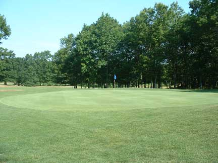

The handicap is used to determine on which holes a player (or team) is granted extra strokes. These are then used to calculate a "net" score from the number of strokes actually played ("gross" score).
To find how many strokes a player is given, the procedures differ between in match play and stroke play. In match play, the difference between the players' (or teams') handicaps is distributed among the holes to be played.
For example, if 18 holes are played, player A's handicap is 24, and player B's handicap is 14, then A is granted ten strokes: one on each of the ten holes identified by the handicap numbers 1 through 10 on the scorecard and no strokes on the remaining eight.
If A's handicap is 36 and B's handicap is 14, A is granted 22 strokes: one on each of the 18 holes to be played, and an additional one on each of the four holes identified by the handicap numbers 1 through 4 on the scorecard.
The procedure in stroke play is similar, but each player's individual handicap (rather than the difference between two players' handicaps) is used to calculate extra strokes. Therefore, a player with handicap 10 is granted one stroke on each of the ten holes identified by the handicap numbers 1 through 10 on the scorecard and no extra strokes on the remaining eight. A player with a handicap of 22 is granted 22 strokes: one on each of the 18 holes and an additional one on each of the four holes identified by the handicap numbers 1 through 4 on the scorecard.
Example for the calculation of "net" results: Assume that A is granted one stroke on a par four hole and player B is granted none. If A plays six strokes and B plays five, their "net" scores are equal. Therefore, in match play the hole is halved; in stroke play both have played a "net" bogey (one over par). If both play five strokes, A has played better by one "net" stroke. Therefore, in match play A wins the hole; in stroke play A has played a "net" par and B a "net" bogey.